Topological naming problem/ko
소개
FreeCAD에서 위상학적 이름 지정 문제(Topological Naming Problem:TNP)는 조형 작업(깔판생성, 잘라내기, 합치기, 모따기, 모깎기 등)이 수행된 후 형상의 내부 이름이 변경되는 문제를 말합니다. 이로 인해 해당 형상에 의존하는 다른 매개변수 제어 도형특징이 깨지거나 잘못 계산될 수 있습니다. 이 문제는 FreeCAD의 모든 객체에 영향을 미치지만  부품설계 작업대를 사용하여 고체를 만들 때와
부품설계 작업대를 사용하여 고체를 만들 때와  설계제도 작업대를 사용하여 해당 고체의 치수를 측정할 때 특히 두드러집니다.
설계제도 작업대를 사용하여 해당 고체의 치수를 측정할 때 특히 두드러집니다.
- In
 PartDesign, if a feature is supported on a face (or edge or vertex), the feature may break if the underlying solid changes size or orientation, as the original face (or edge or vertex) may be internally renamed.
PartDesign, if a feature is supported on a face (or edge or vertex), the feature may break if the underlying solid changes size or orientation, as the original face (or edge or vertex) may be internally renamed. - In
 TechDraw, if a dimension is measuring the length of a projected edge, the dimension may break if the 3D model is changed, as the vertices may be renamed thus changing the measured edge.
TechDraw, if a dimension is measuring the length of a projected edge, the dimension may break if the 3D model is changed, as the vertices may be renamed thus changing the measured edge.
The topological naming issue is a complex problem in CAD modelling that stems from the way the internal FreeCAD routines handle updates of the geometrical shapes created with the OCCT kernel. This problem is not unique to FreeCAD. It is generally present in CAD software, but most other CAD software has heuristics to reduce the impact of the problem on users.
Starting with FreeCAD 0.19 there are ongoing development efforts to improve the core handling of shapes by adding heuristics that reduce the impact of these issues. The naming algorithm is designed to reduce manual effort, sometimes by automatically fixing up problems, and other times presenting a likely solution, and otherwise at least clearly showing what caused the problem. The first stable release of FreeCAD to feature this new naming algorithm is 1.0. Over time, this algorithm will be applied to more parts of FreeCAD, and more automatic and assisted repair will be added in later versions.
The topological naming problem most often affects and confuses new users of FreeCAD. In PartDesign, the user is advised to follow the best practices discussed in the feature editing page. Use of supporting datum objects like planes and local coordinate systems is strongly recommended to produce models that aren't easily subject to such topological errors. In TechDraw, the user is advised to add dimensions only when the 3D model is complete and won't be modified further.
Example
1. In the  PartDesign Workbench, create a
PartDesign Workbench, create a  PartDesign Body, then use
PartDesign Body, then use  PartDesign NewSketch and select the XY plane to draw the base sketch; then perform a
PartDesign NewSketch and select the XY plane to draw the base sketch; then perform a  PartDesign Pad to create a first solid.
PartDesign Pad to create a first solid.
{kind=link}
2. Select the top face of the previous solid, and then use  PartDesign NewSketch to draw another sketch; then perform a second pad.
PartDesign NewSketch to draw another sketch; then perform a second pad.
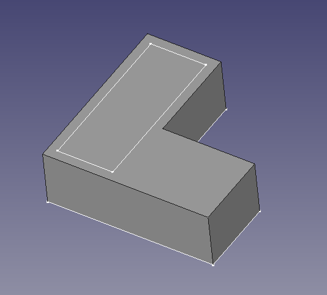 |
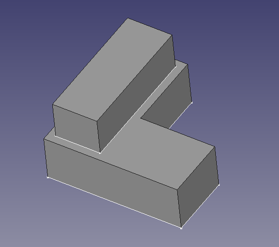 |
{kind=link}
{kind=link}
3. Select the top face of the previous extrusion, and once again create a sketch, and a pad.
{kind=link}
4. Now, double click the second sketch, and modify it so that its length is along the X direction; doing this will recreate the second pad. The third sketch and pad will stay in the same place.
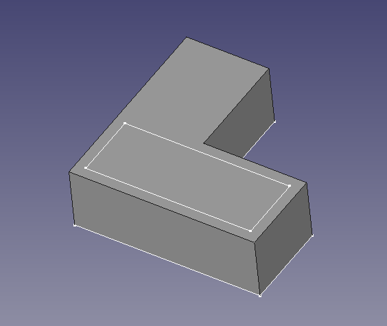 |
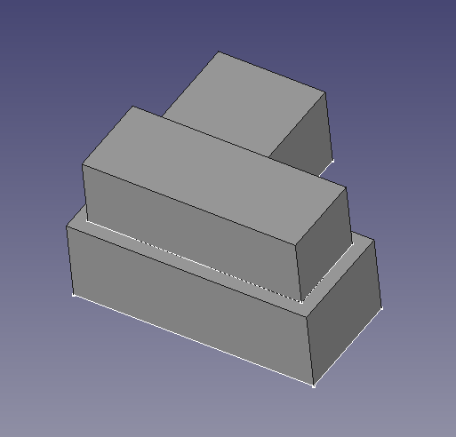 |
{kind=link}
{kind=link}
{kind=link}
5. Now, double click the second sketch again, and adjust its points so that a portion of it is outside the limits defined by the first pad. By doing this, the second pad will recompute correctly, however, when looking at the tree view, an error will be indicated in the third pad.
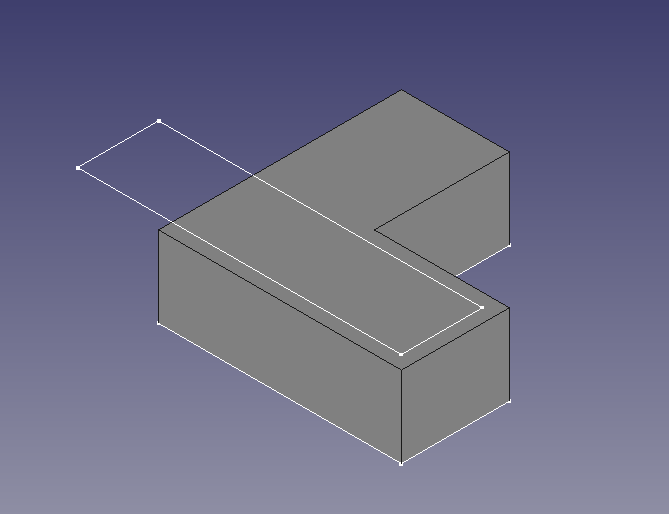 |
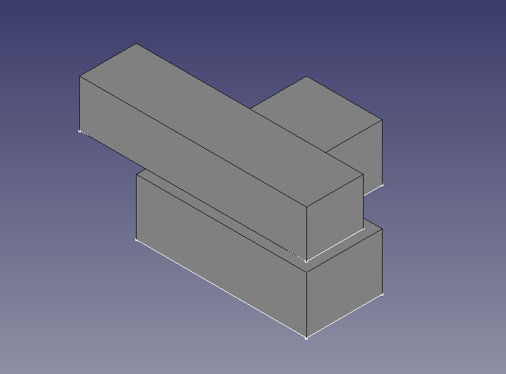 |
{kind=link}
{kind=link}
{kind=link}
6. By making visible the third sketch and pad, it is clear that the computation of the new solid did not proceed correctly. The third sketch, instead of being supported by the top face of the second pad, appears in a strange place, with its normal oriented towards the X direction. This results in an invalid pad, as this pad would be disconnected from the rest of the  PartDesign Body, which is not allowed.
PartDesign Body, which is not allowed.
The problem appears to be that when the second sketch was modified, the top face of the second pad was renamed from Face13 to Face14. The third sketch is attached to Face13 as it originally was, but since this face is now on the side (not at the top), the sketch follows its orientation and now is incorrectly positioned.
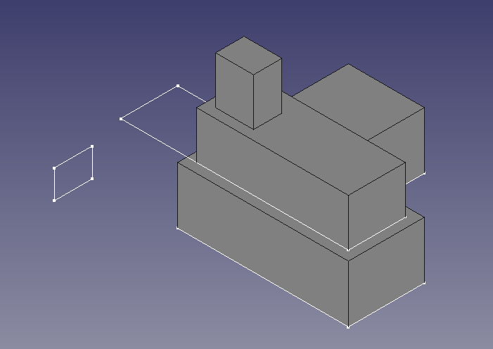 |
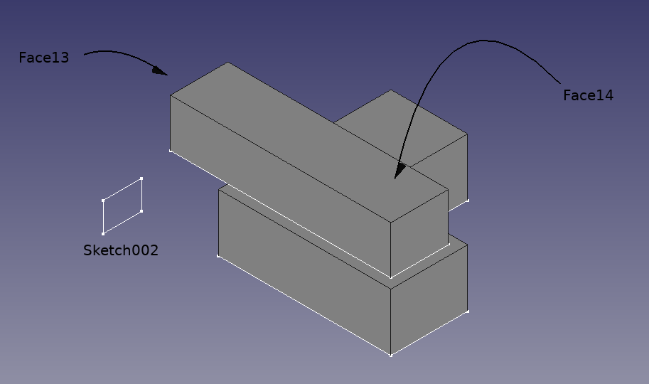 |
{kind=link}
{kind=link}
7. To fix the issue, the third sketch should be mapped to the top face again. Select the sketch, click on the ellipsis (three dots) next to the 데이터Map Mode property, and choose the top face of the second pad again. Then the sketch moves to the top of the existing solid, and the third pad is generated without issues.
{kind=link}
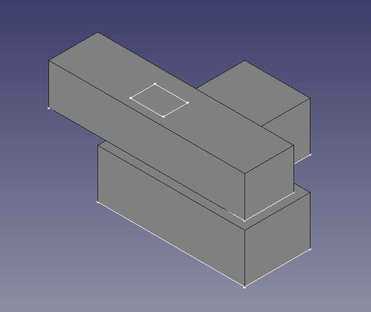 |
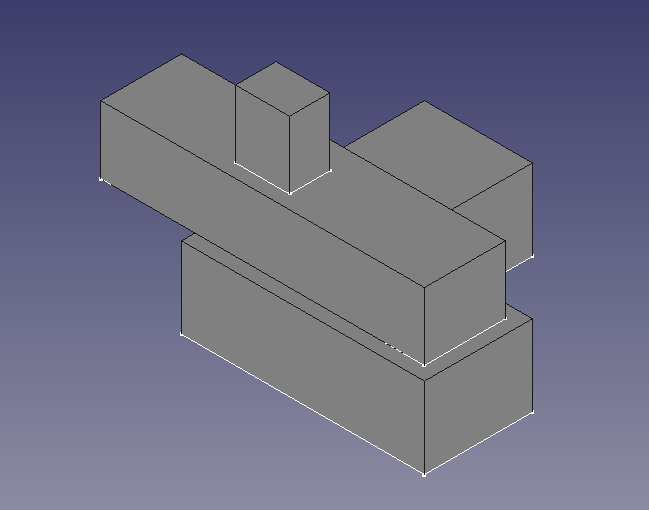 |
{kind=link}
{kind=link}
Remapping a sketch in this way can be done every time there is a topological naming error, however, this may be tedious if the model is complicated and there are many such sketches that need to be adjusted.
Solution
{kind=link}
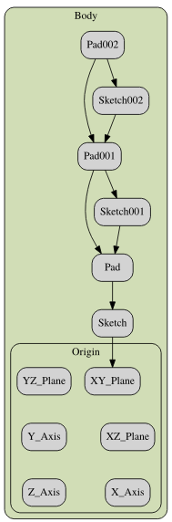
The dependency graph is a tool that is helpful to observe the relationships between the different bodies in the document. Using the original modelling workflow reveals the direct relationship that exists between the sketches and the pads. Like a chain, it is easy to see that this direct dependence will be subject to topological naming problems if any of the links in the sequence changes.
As explained on the feature editing page, a solution to this problem is to support sketches not on faces, but on the main planes of the PartDesign Body's Origin, or on datum planes attached to those main planes. Using datum planes to support a single sketch, as is described below, is actually not necessary as the sketch itself can be directly attached to a main plane and has the same offset options as a datum plane. But using datum planes can make sense when positioning multiple sketches.
1. Select the origin of the PartDesign Body and make sure that it is visible. Then select the XY plane, and click on PartDesign Plane. In the attachment offset dialog, give it an offset in the Z direction so that the datum plane is coplanar with the top face of the first pad.
2. Repeat the process but this time add a larger offset so that the second datum plane is coplanar with the top face of the second pad.
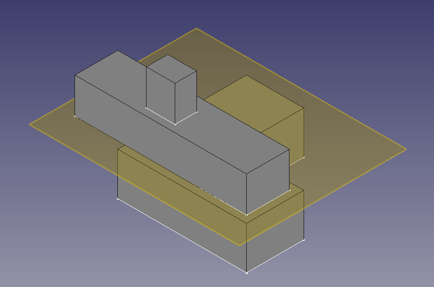 |
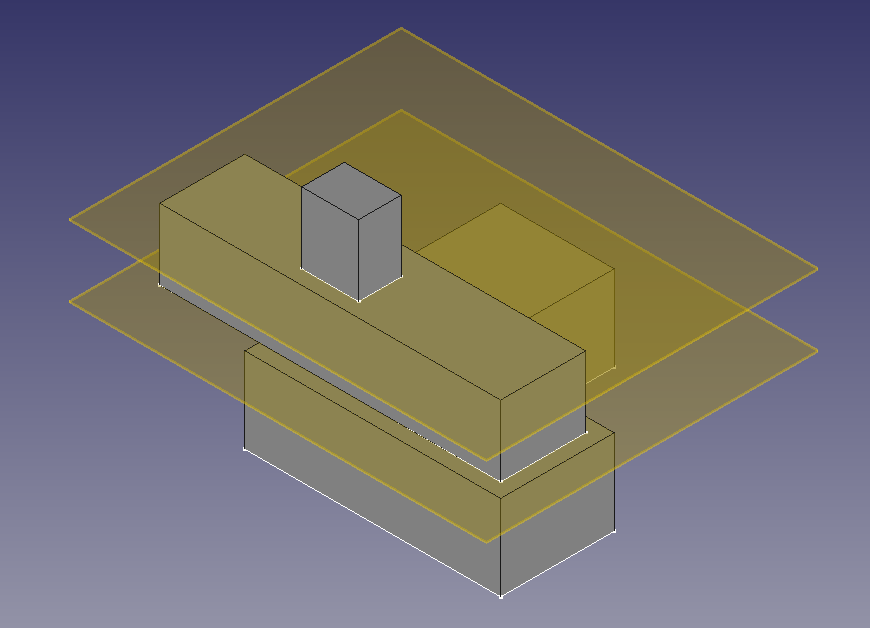 |
{kind=link}
{kind=link}
3. Select the second sketch, click on the ellipsis next to the 데이터Map Mode property, and then select the first datum plane. The datum plane is already offset from the body's XY plane, so no further Z offset is required for the sketch.
4. Repeat the process with the third sketch, and select the second datum plane as support. Again, no further Z offset is necessary.
5. The dependency graph now shows that the sketches and pads are supported by the datum planes. This model is more stable as each sketch can be modified essentially independently from each other.
{kind=link}
6. Double click the second sketch and modify the shape. The second pad should update immediately without causing topological problems with the third sketch and the third pad.
{kind=link}
7. In fact, every sketch can be modified without interfering with each other's pads. As long as the pads have sufficient extrusion length, so that they touch and form a contiguous solid, the entire body will be valid.
{kind=link}
Tradeoffs
Adding datum objects is more work for the user but ultimately produces more stable models that are less subject to the topological naming problem.
Naturally, datum objects can be created before any sketches are drawn, and pads are produced. This may be helpful to visualize the approximate shape and dimensions of the final body.
Datum planes can also be based on other datum planes. This creates a chain of dependencies that could also result in topological problems; however, since datum planes are very simple objects, the risk of having these issues is lower than if the face of a solid object is used as support.
Datum objects, points, lines, planes, and coordinate systems, may also be useful as reference geometry, that is, as visual aids to show the important features in the model, even if no sketch is directly attached to them.
Topological naming algorithm
Realthunder's topological naming algorithm, described in forum thread Topological Naming, My Take, which was selected to reduce the impact of this problem, has been widely described as "fixing the topological naming problem." This has unintentionally misled many users into thinking that it will no longer be helpful to use techniques like datums, explicit sketch placement, and Feature editing to make models more stable. The algorithm is not intended to fix every failure introduced by topological naming ambiguity. Rather, it has three purposes.
- The first and most important purpose is, whenever possible, to identify broken references from topological changes and display an error to the user. Instead of having to work through a series of operations to find the first operation that diverges from the design intent, the operation that changes the names will normally be flagged with an error, making it much easier to manually fix model problems introduced by changes to operations or parameters.
- Sometimes, FreeCAD will be able to identify a likely fix for a broken reference, so that when the user is manually fixing up the flagged broken reference, a candidate will be presented for them to accept or change. A common example of this is dress-up operations like fillets and chamfers, where the user might have to edit the operation and either accept the proposed replacement feature selection or change it to correct it.
- In some cases, FreeCAD will be able to automatically resolve the broken reference, because enough information about the reference is stored to have high confidence that the replacement is correct. For example, when sketching directly on a face, the algorithm will frequently (but not always) correctly repair the reference to the face when the underlying geometry is changed parametrically. (When changing the structure, such as by adding or deleting operations in the middle of a Part Design Body, this kind of automatic repair will be less likely.) However, FreeCAD will do this only with high confidence in the correctness of the repair, because an incorrect automatic repair may re-introduce the problem of having to hunt for where a problem was introduced in order to repair a model after a modification. First, do no harm.
In FreeCAD 1.0, the implementation of this algorithm in the official FreeCAD release reached feature parity with Realthunder's "Linkstage 3" fork, where he originally developed the algorithm, as of the time the integration work started. There are new FreeCAD features that could use the algorithm but do not yet, and there will always be more opportunities to add candidate fixes and automatic repair. The initial work has provided a framework to use for these additional improvements over time, both in core FreeCAD and in Addons.
Links
- PartDesign Fillet - Topological naming
- Topological Naming, My Take: a possible solution, by realthunder.
- Topological Naming Project: idea to solve the problem, by ickby.
- Topological data scripting
- Feature editing: contains alternate advice for stable modelling techniques.
- Clarifying and expanding "Topological Naming Problem" documentation: Clarifying expectations for Realthunder's topological naming algorithm selected for FreeCAD 1.0.
Videos
- Why do my FreeCAD models break? - "Topological Naming Problem": A Video explanation of the underlying issues of Topological naming problem
- FreeCAD Is Fundamentally Broken! - Now what... Help Me Decide...: A Maker Tales Video
- Getting started
- Installation: Download, Windows, Linux, Mac, Additional components, Docker, AppImage, Ubuntu Snap
- Basics: About FreeCAD, Interface, Mouse navigation, Selection methods, Object name, Preferences, Workbenches, Document structure, Properties, Help FreeCAD, Donate
- Help: Tutorials, Video tutorials
- Workbenches: Std Base, Assembly, BIM, CAM, Draft, FEM, Inspection, Material, Mesh, OpenSCAD, Part, PartDesign, Points, Reverse Engineering, Robot, Sketcher, Spreadsheet, Surface, TechDraw, Test Framework
- Hubs: User hub, Power users hub, Developer hub
- Page: New Page, New Page From Template, Update Template Fields, Redraw Page, Print All Pages, Export Page as SVG, Export Page as DXF
- TechDraw Views: New View, Broken View, Section View, Complex Section View, Detail View, Projection Group, Clip Group, Insert SVG, Bitmap Image, Share View, Project Shape
- Views From Other Workbenches: Active View, Draft View, BIM View, Spreadsheet View
- Dimensions: Dimension, Length Dimension, Horizontal Length Dimension, Vertical Length Dimension, Radius Dimension, Diameter Dimension, Angle Dimension, Angle Dimension From 3 Points, Area Annotation, Horizontal Extent Dimension, Vertical Extent Dimension, Repair Dimension References
- Hatching: Image Hatch, Geometric Hatch
- Symbols: Weld Symbol, Surface Finish Symbol, Hole/Shaft Fit
- Stacking: Stack Top, Stack Bottom, Stack Up, Stack Down
- Attributes/Modifications: Select Line Attributes, Cascade Spacing and Delta Distance, Change Line Attributes, Extend Line, Shorten Line, Toggle View Lock, Position Section View, Align Horizontal Chain Dimensions, Align Vertical Chain Dimensions, Align Oblique Chain Dimensions, Cascade Horizontal Dimensions, Cascade Vertical Dimensions, Cascade Oblique Dimensions, Area Annotation, Arc Length Annotation, Customize Format Label
- Centerlines/Threading: Circle Centerlines, Bolt Circle Centerlines, Cosmetic Thread Hole Side View, Cosmetic Thread Hole Bottom View, Cosmetic Thread Bolt Side View, Cosmetic Thread Bolt Bottom View, Cosmetic Intersection Vertices, Offset Vertex, Cosmetic 1 Point Circle, Cosmetic 2 Point Circle, Cosmetic 3 Point Circle, Cosmetic Arc, Cosmetic Parallel Line, Cosmetic Perpendicular Line
- Format/Organize Dimensions Horizontal Chain Dimension, Vertical Chain Dimension, Oblique Chain Dimension, Horizontal Coordinate Dimension, Vertical Coordinate Dimension, Oblique Coordinate Dimension, Horizontal Chamfer Dimension, Vertical Chamfer Dimension, Arc Length Dimension, Insert '⌀' Prefix, Insert '□' Prefix, Insert 'n×' Prefix, Remove Prefix, Increase Decimal Places, Decrease Decimal Places
- Annotations: Text Annotation, Rich Text Annotation, Balloon Annotation, Axonometric Length Dimension
- Add Lines: Leader Line, Centerline on Face, Centerline Between 2 Lines, Centerline Between 2 Points, Cosmetic Line Through 2 points, Edit Line Appearance, Toggle Edge Visibility
- Add Vertices: Cosmetic Vertex, Midpoint Vertices, Quadrant Vertices
- Miscellaneous: Remove Cosmetic Object
- Additional: Line Groups, Templates, Hatching, Geometric dimensioning and tolerancing, Preferences
- Helper tools: New Body, New Sketch, Attach Sketch, Edit Sketch, Validate Sketch, Check Geometry, Sub-Shape Binder, Clone
- Modeling tools:
- Additive tools: Pad, Revolution, Additive Loft, Additive Pipe, Additive Helix, Additive Box, Additive Cylinder, Additive Sphere, Additive Cone, Additive Ellipsoid, Additive Torus, Additive Prism, Additive Wedge
- Subtractive tools: Pocket, Hole, Groove, Subtractive Loft, Subtractive Pipe, Subtractive Helix, Subtractive Box, Subtractive Cylinder, Subtractive Sphere, Subtractive Cone, Subtractive Ellipsoid, Subtractive Torus, Subtractive Prism, Subtractive Wedge
- Boolean: Boolean Operation
- Dress-up tools: Fillet, Chamfer, Draft, Thickness
- Transformation tools: Mirror, Linear Pattern, Polar Pattern, Multi-Transform, Scale
- Additional tools: Shape Binder, Involute Gear, Sprocket, Shaft Design Wizard
- Context menu: Suppressed, Set Tip, Move Object To…, Move Feature After…
- Preferences: Preferences, Fine tuning
- Creation and modification: New Sketch, Extrude, Revolve, Mirror, Scale, Fillet, Chamfer, Face From Wires, Ruled Surface, Loft, Sweep, Section, Cross-Sections, 3D Offset, 2D Offset, Thickness, Project on Surface, Appearance per Face
- Boolean: Compound, Explode Compound, Compound Filter, Boolean Operation, Cut, Union, Intersection, Connect Shapes, Embed Shapes, Cutout Shape, Boolean Fragments, Slice Apart, Slice to Compound, Boolean XOR, Check Geometry, Defeaturing
- Other tools: Box Selection, Shape From Mesh, Points From Shape, Convert to Solid, Reverse Shapes, Simple Copy, Transformed Copy, Shape Element Copy, Refine Shape, Set Tolerance, Persistent Section Cut, Attachment
- Preferences: Preferences, Fine tuning